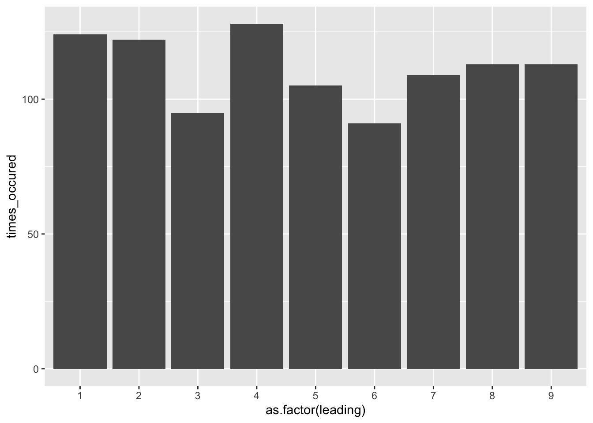
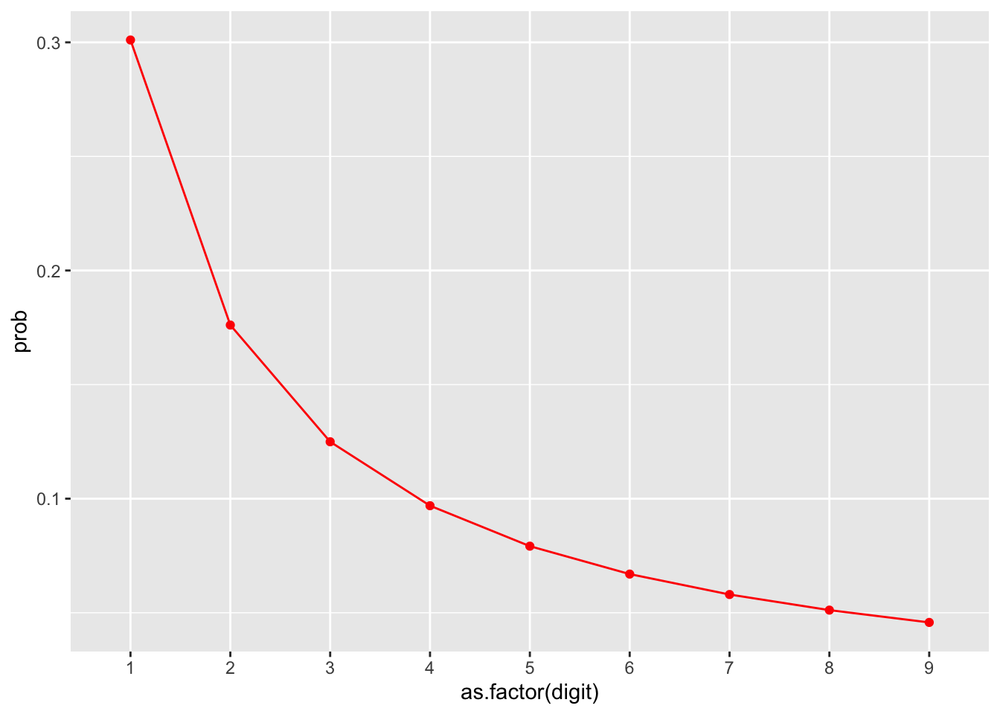
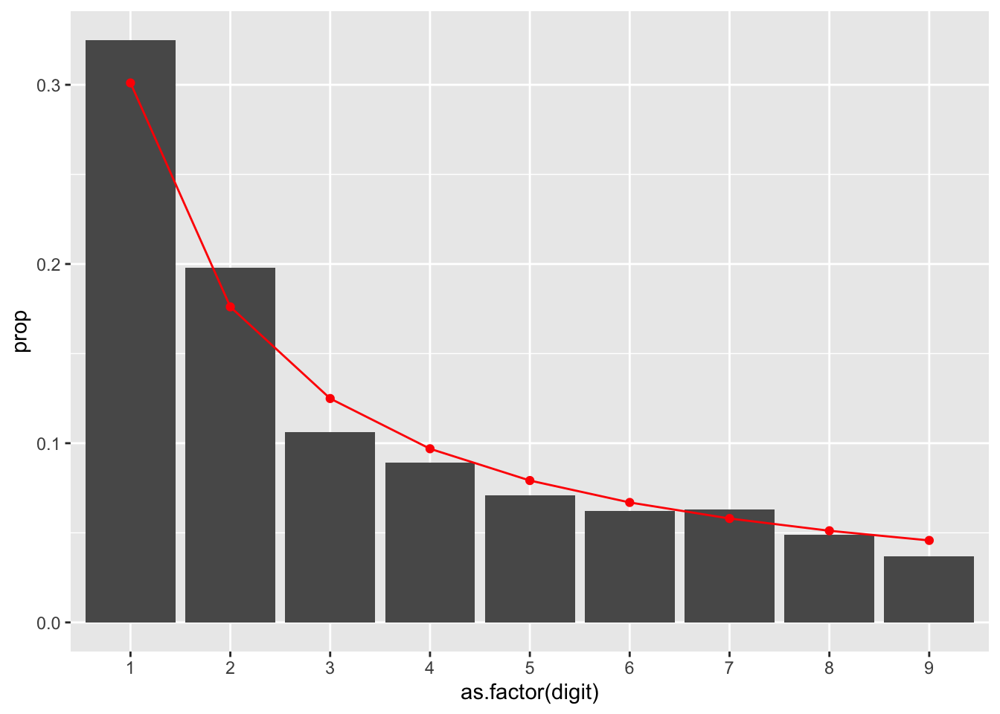

Chapter 9 Test
Testing data is the act of isolating high-risk records that meet criteria. While generally the intent of data analytics within auditing is to gain 100% population coverage and associated assurance, what will inevitably happen is that process deviations are revealed as items are detected. No process is bullet-proof and exception free, and therefore the auditor should have a founded idea of their level of risk tolerance prior to testing. Testing data will then help auditors articulate the nature of the exceptions and the overall risk level.
Auditors must recognize that not all tests (and lines that meet these tests) immediately ascertain that the control has failed or that something suspicious has occurred. Rather, it points to items that require further inspection and judgment. By iterating your workflow, you will be able to reduce the incidence of false positives and increase your detection rate, allowing you to focus on follow-up of higher-risk activity.
For this section we will use the company GL database.
library(dplyr)
library(tidyr)
library(lubridate)
library(DBI)
library(ggplot2)
dir.create("data", showWarnings = FALSE)
download.file(url = "https://github.com/jonlinca/auditanalytics/raw/master/data/rauditanalytics.sqlite",
destfile = "data/rauditanalytics.sqlite", mode = "wb")
con <- dbConnect(RSQLite::SQLite(), "data/rauditanalytics.sqlite")
gl <- tbl(con, 'gl') %>%
collect() %>%
mutate(gl_date = as_date(gl_date, origin = '1970-01-01'),
paid_date = as_date(paid_date, origin = '1970-01-01'),
invoice_date = as_date(invoice_date, origin = '1970-01-01')) %>%
select(-gl_date_char)
dbDisconnect(con)Our primary commands for this chapter will be mutate() and filter(). The mutate() command is useful for testing data, as it allows the auditor to add features and/or criteria to their testing. After records have been identified, filter() will extract the rows matching criteria.
While you may able to directly filter() rows based on criteria, you may find it more effective to instead create the new fields with mutate() that match the filter criteria. This has benefits in the long run, including:
- Keeping all the tests on the same row allows for an easier way to detect any row that met multiple criteria,
- It is straightforward to extract the rows that meets a test, and
- Each new column related to a specific a criteria is akin to feature engineering, enabling the reuse of the tests for machine learning applications.
My style for documenting tests is to create any additional features needed, and then create a corresponding test column, with t_ as the prefix, and isolate for these invoices to perform inspection and follow-up. There may be reasons why you may need to create separate data frame objects, so do not prescribe yourself to this method for extremely long or sophisticated steps.
9.1 Amount-based tests
9.1.1 Above threshold
The most classical test is to test items that meet or exceed a material value.
gl %>%
mutate(t_over_te = amount >= 60000) %>%
filter(t_over_te) %>%
select(je_num, amount, everything())## # A tibble: 2 x 9
## je_num amount gl_date vendor_id account invoice_date description paid_date
## <int> <dbl> <date> <int> <chr> <date> <chr> <date>
## 1 140 96355. 2019-12-19 2211 exp_ma… 2019-12-12 Packaging … 2020-01-18
## 2 693 88524. 2019-08-13 2726 exp_ma… 2019-08-06 Quality co… 2019-08-16
## # … with 1 more variable: t_over_te <lgl>When performing amount or threshold testing, you may be more interested in the actual magnitude, and not necessarily the direction. This is especially true within accounting matters, where the implication of negative and positive amounts change depending on the transaction - i.e., a debit or a credit transaction, or affecting a balance sheet or income statement account can tell a very different story.
In these cases, you may want to consider using absolute values as the comparison. This allows you to capture the magnitude of the change:
## # A tibble: 4 x 9
## je_num amount gl_date vendor_id account invoice_date description
## <int> <dbl> <date> <int> <chr> <date> <chr>
## 1 140 96355. 2019-12-19 2211 exp_ma… 2019-12-12 Packaging …
## 2 140 -96355. 2019-12-19 NA liab_a… 2019-12-12 Packaging …
## 3 693 88524. 2019-08-13 2726 exp_ma… 2019-08-06 Quality co…
## 4 693 -88524. 2019-08-13 NA liab_a… 2019-08-06 Quality co…
## # … with 2 more variables: paid_date <date>, t_over_te <lgl>9.1.2 Round numbers
In forensic accounting, auditors tend to take the position that transactions rarely end in whole dollars, especially if they end in multiples of 5, or even in multiples of tens.
Detection of these is contingent on the use of %%, better known as the modulo operator. It will calculate the remainder of a division calculation; dividing 1.50 by 1 will give you a remainder of 0.5.
## [1] 0.5This same approach can be used to detect if a transaction is round, i.e. has no ‘cents’ in it. How you decide to apply this can be useful in many cases. For example, finding a transaction that happens to be cleanly in the ‘thousands’, perform the modulo by the corresponding amount and look for results where the remainder is 0.
## [1] 0Or even a round five number, which has its use cases when it comes to things like gift cards or tipping at restaurants:
## [1] 0When implementing as a test, I’d encourage creating multiple tests to see which test it matched, and then detect these variations together:
gl %>%
mutate(t_round_5 = amount %% 5 == 0,
t_round_10 = amount %% 10 == 0,
t_round_100 = amount %% 100 == 0,
t_round_1000 = amount %% 1000 == 0) %>%
filter_at(vars(starts_with("t_round")), any_vars(.)) %>%
select(je_num, amount, starts_with("t_round"))## # A tibble: 2 x 6
## je_num amount t_round_5 t_round_10 t_round_100 t_round_1000
## <int> <dbl> <lgl> <lgl> <lgl> <lgl>
## 1 621 12800 TRUE TRUE TRUE FALSE
## 2 621 -12800 TRUE TRUE TRUE FALSE9.2 Date-based tests
9.2.1 Weekend testing
As a typical office business (along with office activities) generally happen on the weekday - that is, Monday through Friday. We may be interested in selecting journal entries from a sample of activities that occurred on the weekend. To test this, we can use the lubridate package to determine what day of week our entry falls upon:
gl <- gl %>%
mutate(day_of_week = wday(gl_date, label = TRUE), # Label is useful if you tend to forget what each number means
t_weekend = day_of_week %in% c('Sat', 'Sun'))
gl %>%
filter(t_weekend) %>%
head()## # A tibble: 6 x 10
## je_num amount gl_date vendor_id account invoice_date description
## <int> <dbl> <date> <int> <chr> <date> <chr>
## 1 54 35758. 2019-01-12 2612 exp_ma… 2019-01-02 Face mask …
## 2 54 -35758. 2019-01-12 NA liab_a… 2019-01-02 Face mask …
## 3 102 50135. 2019-01-12 2726 exp_ma… 2019-01-05 Medical gr…
## 4 102 -50135. 2019-01-12 NA liab_a… 2019-01-05 Medical gr…
## 5 223 50128. 2019-01-12 2211 exp_ma… 2019-01-05 Packaging …
## 6 223 -50128. 2019-01-12 NA liab_a… 2019-01-05 Packaging …
## # … with 3 more variables: paid_date <date>, day_of_week <ord>, t_weekend <lgl>9.2.2 Cutoff testing
When transactions are near the end of the month (or the end of the year), cutoff testing helps establish that the transactions were recorded within the correct time period. Testing these may require selecting invoices close to month end.
Similar to how we calculate the period using floor_date(), we can take any date and transform it with ceiling_date() which will calculate the last date of the month. Then we can test to see if a date falls within the range as needed.
gl %>%
mutate(end_of_month = ceiling_date(gl_date, unit = 'month')) %>%
select(gl_date, end_of_month) %>%
head()## # A tibble: 6 x 2
## gl_date end_of_month
## <date> <date>
## 1 2019-12-02 2020-01-01
## 2 2019-12-02 2020-01-01
## 3 2019-11-28 2019-12-01
## 4 2019-11-28 2019-12-01
## 5 2019-04-09 2019-05-01
## 6 2019-04-09 2019-05-01This is close to our desired result, but all these dates are representative of the beginning of the following month. To transform dates, simply use the unit as desired and treat it like a math calculation. As all these dates are one day ahead, a days difference calculation will suffice:
gl <- gl %>%
mutate(end_of_month = ceiling_date(gl_date, unit = 'month') - days(1))
gl %>%
select(gl_date, end_of_month) %>%
head()## # A tibble: 6 x 2
## gl_date end_of_month
## <date> <date>
## 1 2019-12-02 2019-12-31
## 2 2019-12-02 2019-12-31
## 3 2019-11-28 2019-11-30
## 4 2019-11-28 2019-11-30
## 5 2019-04-09 2019-04-30
## 6 2019-04-09 2019-04-30And to detect which lines are close to month end, simply calculate the difference between the end of month and the original date, keeping only dates very close to the end of the month:
gl %>%
mutate(t_cutoff = (end_of_month - gl_date) <= 1) %>% # Find entries on or one day prior to month end
filter(t_cutoff) %>%
select(je_num, gl_date, t_cutoff, everything())## # A tibble: 136 x 12
## je_num gl_date t_cutoff amount vendor_id account invoice_date description
## <int> <date> <lgl> <dbl> <int> <chr> <date> <chr>
## 1 4 2019-10-30 TRUE 20037. 2612 exp_ma… 2019-10-20 Paper
## 2 4 2019-10-30 TRUE -20037. NA liab_a… 2019-10-20 Paper
## 3 6 2019-01-31 TRUE 13603. 2726 exp_ma… 2019-01-24 Medical gr…
## 4 6 2019-01-31 TRUE -13603. NA liab_a… 2019-01-24 Medical gr…
## 5 11 2019-07-30 TRUE 3000. 2612 exp_ma… 2019-07-20 Paper
## 6 11 2019-07-30 TRUE -3000. NA liab_a… 2019-07-20 Paper
## 7 31 2019-04-29 TRUE 9931. 2211 exp_co… 2019-04-14 Advisory s…
## 8 31 2019-04-29 TRUE -9931. NA liab_a… 2019-04-14 Advisory s…
## 9 44 2019-02-28 TRUE 3838. 2211 exp_ma… 2019-02-21 Packaging …
## 10 44 2019-02-28 TRUE -3838. NA liab_a… 2019-02-21 Packaging …
## # … with 126 more rows, and 4 more variables: paid_date <date>,
## # day_of_week <ord>, t_weekend <lgl>, end_of_month <date>9.2.3 Age
Aging invoices is generally a system-ran report out of the accounting system. Independently testing these reports is one of the strongest forms of assurance, which requires an understanding of the underlying data, including calculation accuracy and completeness.
At its core, an aging calculation is the comparison of one date to another certain date, and then aggregating the total amount by buckets indicating a range of days. However, it gets complicated rather quick because of how different systems implement aging:
- Which dates are being compared - invoice dates, entry dates, paid dates and/or due dates?
- Speaking of due dates, are you able to calculate a due date on a per-vendor (or even, per invoice) basis?
- Are you able to run a report ‘as-of’? The as-of date is intended to help understand the outstanding balances at a specific point of time. Some accounting systems have insufficient information captured, meaning a backdated entered invoice (perhaps to a prior period) may affect the accuracy of a previous report.
We will initially filter our data and only keep valid invoices, by filtering on records that are related to materials:
gl %>%
filter(account == 'exp_materials_6000') %>% # In scope invoices for aging
select(je_num, vendor_id, gl_date, invoice_date, paid_date)## # A tibble: 952 x 5
## je_num vendor_id gl_date invoice_date paid_date
## <int> <int> <date> <date> <date>
## 1 1 2211 2019-12-02 2019-11-25 2020-01-01
## 2 2 2612 2019-11-28 2019-11-18 2019-12-21
## 3 3 2612 2019-04-09 2019-03-30 2019-05-02
## 4 4 2612 2019-10-30 2019-10-20 2019-11-22
## 5 5 2612 2019-06-04 2019-05-25 2019-06-27
## 6 6 2726 2019-01-31 2019-01-24 2019-02-03
## 7 7 2726 2019-10-21 2019-10-14 2019-10-24
## 8 8 2211 2019-04-24 2019-04-17 2019-05-24
## 9 9 2726 2019-07-10 2019-07-03 2019-07-13
## 10 10 2211 2019-06-13 2019-06-06 2019-07-13
## # … with 942 more rowsIn our GL data set, we have captured invoices (denoted as transactions against expense accounts), as well as the GL date (the day the company received the invoice), the invoice date as written by the supplier, and the date the invoice was paid.
With a better understanding of the dates, we can now focus on reproducing an accurate report:
- An invoice was recognized in our system as per the
gl_date, - An invoice was considered fully paid as of the
paid_date, and - The definition of age in our system is based off the
invoice_dateand an user-chosen ‘as-of’ date.
We will use August 1, 2019 as our as-of date, and only include invoices that were recognized on or prior to then.
as_of_date <- as.Date('2019-08-01')
gl %>%
filter(account == 'exp_materials_6000') %>% # In scope invoices for aging
select(je_num, vendor_id, gl_date, invoice_date, paid_date) %>%
filter(gl_date <= as_of_date) # Only choose recognized invoices as of a date## # A tibble: 571 x 5
## je_num vendor_id gl_date invoice_date paid_date
## <int> <int> <date> <date> <date>
## 1 3 2612 2019-04-09 2019-03-30 2019-05-02
## 2 5 2612 2019-06-04 2019-05-25 2019-06-27
## 3 6 2726 2019-01-31 2019-01-24 2019-02-03
## 4 8 2211 2019-04-24 2019-04-17 2019-05-24
## 5 9 2726 2019-07-10 2019-07-03 2019-07-13
## 6 10 2211 2019-06-13 2019-06-06 2019-07-13
## 7 11 2612 2019-07-30 2019-07-20 2019-08-22
## 8 12 2726 2019-06-19 2019-06-12 2019-06-22
## 9 16 2211 2019-01-18 2019-01-11 2019-02-17
## 10 17 2612 2019-02-05 2019-01-26 2019-02-28
## # … with 561 more rowsWe can also remove any paid invoices too, as they’re no longer aged as-of that date. Depending when you are running your report, an invoice may could either be paid or not paid yet.
gl %>%
filter(account == 'exp_materials_6000') %>% # In scope invoices for aging
select(je_num, vendor_id, gl_date, invoice_date, paid_date) %>%
filter(gl_date <= as_of_date) %>% # Only choose recognized invoices as of a date
filter(paid_date >= as_of_date | is.na(paid_date)) # Keep invoices that were not paid by the as-of date, or not paid at all yet## # A tibble: 71 x 5
## je_num vendor_id gl_date invoice_date paid_date
## <int> <int> <date> <date> <date>
## 1 11 2612 2019-07-30 2019-07-20 2019-08-22
## 2 18 2612 2019-07-23 2019-07-13 2019-08-15
## 3 20 2211 2019-07-23 2019-07-16 2019-08-22
## 4 22 2612 2019-07-18 2019-07-08 2019-08-10
## 5 38 2211 2019-07-25 2019-07-18 2019-08-24
## 6 57 2211 2019-07-12 2019-07-05 2019-08-11
## 7 75 2211 2019-07-08 2019-07-01 2019-08-07
## 8 85 2612 2019-07-15 2019-07-05 2019-08-07
## 9 88 2612 2019-07-31 2019-07-21 2019-08-23
## 10 97 2612 2019-07-30 2019-07-20 2019-08-22
## # … with 61 more rowsHaving isolated our invoices, we can now calculate the number of aged days:
gl %>%
filter(account == 'exp_materials_6000') %>% # In scope invoices for aging
filter(gl_date <= as_of_date) %>% # Only choose recognized invoices as of a date
filter(paid_date >= as_of_date | is.na(paid_date)) %>% # Keep invoices that are not paid by the as-of date, or not paid at all yet
mutate(aged_days = as.numeric(as_of_date - invoice_date)) %>%
select(invoice_date, paid_date, aged_days)## # A tibble: 71 x 3
## invoice_date paid_date aged_days
## <date> <date> <dbl>
## 1 2019-07-20 2019-08-22 12
## 2 2019-07-13 2019-08-15 19
## 3 2019-07-16 2019-08-22 16
## 4 2019-07-08 2019-08-10 24
## 5 2019-07-18 2019-08-24 14
## 6 2019-07-05 2019-08-11 27
## 7 2019-07-01 2019-08-07 31
## 8 2019-07-05 2019-08-07 27
## 9 2019-07-21 2019-08-23 11
## 10 2019-07-20 2019-08-22 12
## # … with 61 more rowsNow the most complex part is making buckets for these ages. A rather brute force way is to create a field with the range it falls in, and then eventually pivoting on it:
aged_wip <- gl %>%
filter(account == 'exp_materials_6000') %>% # In scope invoices for aging
select(je_num, account, vendor_id, gl_date, invoice_date, paid_date) %>%
filter(gl_date <= as_of_date) %>% # Only choose recognized invoices as of a date
filter(paid_date >= as_of_date | is.na(paid_date)) %>% # Keep invoices that are not paid by the as-of date, or not paid at all yet
mutate(aged_days = as.numeric(as_of_date - invoice_date)) %>%
select(aged_days)
aged_wip %>%
mutate(aging_bucket = case_when(
aged_days < 15 ~ "Current",
aged_days < 30 ~ "15 - 30",
aged_days < 90 ~ "30 - 59",
TRUE ~ "60+"
))## # A tibble: 71 x 2
## aged_days aging_bucket
## <dbl> <chr>
## 1 12 Current
## 2 19 15 - 30
## 3 16 15 - 30
## 4 24 15 - 30
## 5 14 Current
## 6 27 15 - 30
## 7 31 30 - 59
## 8 27 15 - 30
## 9 11 Current
## 10 12 Current
## # … with 61 more rowsAnother useful method is to use the cut() function, which will take the intervals you specify (aged days) and place each row into the category. The labels look a bit different - inclusive boundaries are ( while exclusive boundaries are ]:
## # A tibble: 71 x 2
## aged_days aging_bucket
## <dbl> <fct>
## 1 12 (0,15]
## 2 19 (15,30]
## 3 16 (15,30]
## 4 24 (15,30]
## 5 14 (0,15]
## 6 27 (15,30]
## 7 31 (30,60]
## 8 27 (15,30]
## 9 11 (0,15]
## 10 12 (0,15]
## # … with 61 more rowsYou can choose which approach best fits your style. With all the pieces, we can now create the aging report, aggregated by vendor. First, lets only keep the variables we want to pivot:
aged <- gl %>%
filter(account == 'exp_materials_6000') %>% # In scope invoices for aging
filter(gl_date <= as_of_date) %>% # Only choose recognized invoices as of a date
filter(paid_date >= as_of_date | is.na(paid_date)) %>% # Keep invoices that are not paid by the as-of date, or not paid at all yet
mutate(aged_days = as.numeric(as_of_date - invoice_date)) %>%
mutate(aging_bucket = case_when(
aged_days < 15 ~ "Current",
aged_days < 30 ~ "15 - 30",
aged_days < 90 ~ "30 - 59",
TRUE ~ "60+"
)) %>%
select(vendor_id, amount, aging_bucket)
print(aged)## # A tibble: 71 x 3
## vendor_id amount aging_bucket
## <int> <dbl> <chr>
## 1 2612 3000. Current
## 2 2612 8436. 15 - 30
## 3 2211 725. 15 - 30
## 4 2612 5037. 15 - 30
## 5 2211 7412. Current
## 6 2211 11461. 15 - 30
## 7 2211 2206. 30 - 59
## 8 2612 2491. 15 - 30
## 9 2612 294. Current
## 10 2612 13593. Current
## # … with 61 more rowsSince our typical aging report has vendors along the left (the unique identifier for id_cols argument), aging buckets along the top (the names we want to spread across with names_from) and the amount is a summation of the valid values (values_from and also values_fn), we can use pivot_wider() to recreate our report:
aged %>%
pivot_wider(id_cols = vendor_id, names_from = aging_bucket, values_from = amount, values_fn = sum)## # A tibble: 3 x 4
## vendor_id Current `15 - 30` `30 - 59`
## <int> <dbl> <dbl> <dbl>
## 1 2612 58163. 57468. 41684.
## 2 2211 120974. 114429. 136315.
## 3 2726 105586. NA NA9.3 Basic Statistical tests
In the exploration of data, we highlighted that exploring your data using various statistical functions are useful for
9.3.1 Outliers based on amount
An outlier is an observation that lies an abnormal distance from other values in a random sample from a population. In a sense, this definition leaves it up to the analyst (or a consensus process) to decide what will be considered abnormal. Before abnormal observations can be singled out, it is necessary to characterize normal observations. (NIST/Sematech E-Handbook of Statistical Methods, n.d.)
Our general approach to using statistical tests is to bring attention to “abnormal” entries in our data. Abnormal may be different depending on the situation, but items that stand apart from the rest are of audit interest.
Outliers are very specific to the dataset we are analyzing, and are highly dependent on the nature and structure of the work we have.
The most basic detection of extreme outliers can be done on an amount, looking for material transactions, by using the quantiles and IQRs. Quantiles indicate the thresholds where amounts may be in the bottom 25% or above the top 75% of data points. The IQR is defined as the difference between the upper 75% quantile and lower 25% quantile (i.e. the 3rd quartile and 1st quartile).
The extreme outlier test is defined as points less than the 25% quantile minus 1.5 * inter quartile range (IQR), or above the 75% quantile plus 1.5 * IQR.
In this case, we want to detect items greater than the extreme upper outlier:
# Detect amounts in the top 25% of transactions
top_75 <- quantile(abs(gl$amount))[4] # This is the 3st quartile, or the 75% quantile
iqr <- IQR(abs(gl$amount))
upper_extreme_outlier <- top_75 + iqr * 1.5
print(paste0("The upper_extreme_outlier is $", upper_extreme_outlier))## [1] "The upper_extreme_outlier is $31929.19125"gl %>%
dplyr::filter(amount > upper_extreme_outlier) %>%
select(je_num, amount, account, description) %>%
arrange(description)## # A tibble: 46 x 4
## je_num amount account description
## <int> <dbl> <chr> <chr>
## 1 5 43140. exp_materials_6000 Blue dye
## 2 430 37341. exp_materials_6000 Blue dye
## 3 825 36918. exp_materials_6000 Blue dye
## 4 70 32584. exp_materials_6000 Fabric cutting machines
## 5 427 44950. exp_materials_6000 Fabric cutting machines
## 6 54 35758. exp_materials_6000 Face mask elastics
## 7 531 42785. exp_materials_6000 Face mask elastics
## 8 680 36860. exp_materials_6000 Fancy cloth prints
## 9 832 37269. exp_materials_6000 Fancy cloth prints
## 10 66 51347. exp_materials_6000 Medical grade filters
## # … with 36 more rows9.3.2 Outliers based on amounts and other factors
By performing a test based solely on amounts alone, other meaningful data is ignored. The nuances of specific subsets of data are lost due to an overarching amount analysis, which could be too crude.
There are other useful features in our dataset we can use to potentially segment the data. There is the account information, which can be interpreted as consistent categories of information. There are also descriptions, which help us understand more granular detail about the nature of the transaction. A combination of any identifying categories (or factors) could be used to identify outliers.
If we focus our analysis on both the description and amount, we can identify amount extreme outliers on a more unique basis. First, we need to group the descriptions and independently calculate the upper_extreme_outlier on a per group basis:
outliers_per_desc <- gl %>%
group_by(description) %>%
summarize(count = n(),
upper_limit = quantile(abs(amount))[4],
iqr = IQR(abs(amount))) %>%
mutate(upper_extreme_outlier = upper_limit + 1.5 * iqr)## `summarise()` ungrouping output (override with `.groups` argument)## # A tibble: 25 x 5
## description count upper_limit iqr upper_extreme_out…
## <chr> <int> <dbl> <dbl> <dbl>
## 1 Advisory fee for face mask manuf… 10 9277. 1.84e2 9552.
## 2 Advisory services for tax expats 24 9897. 3.53e2 10427.
## 3 Audit fees for big four audit fi… 10 9788. 4.73e2 10497.
## 4 Blue dye 80 14581. 1.20e4 32509.
## 5 Buffet 4 156. 3.76e1 212.
## 6 Catering 8 120. 7.26e1 229.
## 7 Consulting fee on how to adhere … 6 9784. 5.14e2 10556.
## 8 Fabric cutting machines 68 15591. 1.31e4 35204.
## 9 Face mask elastics 74 13461. 1.10e4 30007.
## 10 Facilitation payment to agent fi… 2 9715. 0. 9715.
## # … with 15 more rowsUsing this, we can quickly look up the upper_extreme_outlier in our gl table, and reduce our scope to only filter amounts greater than the limit per description entry.
gl %>%
left_join(outliers_per_desc, by = 'description') %>%
filter(amount >= upper_extreme_outlier) %>%
select(je_num, amount, account, description, upper_extreme_outlier) %>%
group_by(description) %>%
slice_max(order_by = amount, n = 5)## # A tibble: 33 x 5
## # Groups: description [14]
## je_num amount account description upper_extreme_out…
## <int> <dbl> <chr> <chr> <dbl>
## 1 975 9834. exp_consultin… Advisory fee for face mask … 9552.
## 2 5 43140. exp_materials… Blue dye 32509.
## 3 430 37341. exp_materials… Blue dye 32509.
## 4 825 36918. exp_materials… Blue dye 32509.
## 5 427 44950. exp_materials… Fabric cutting machines 35204.
## 6 531 42785. exp_materials… Face mask elastics 30007.
## 7 54 35758. exp_materials… Face mask elastics 30007.
## 8 755 9715. exp_consultin… Facilitation payment to age… 9715.
## 9 335 52.2 exp_meals_7000 Italian food restaurant 52.2
## 10 309 1630. exp_materials… Meals for launch celebration 1630.
## # … with 23 more rowsThe results are different than the outliers based solely on the amount, and are a good evaluation on a per-group basis.
9.4 Unusual pattern and behaviours
9.4.1 Benford’s Law analysis
The general principle of fraud detection is that individuals behave differently when they attempt to conceal, manipulate or make up information, as the fictional creation of numbers by people is different than how the accounting world behaves. As a result, these behaviours tend to stand out when certain tests are applied to them.
Benford’s Law is a common application in the accounting and auditing, as it is a quick litmus test to see if there are symptoms of anomalies in a dataset. The law generally states that in a set of values, the leading digit of 1 will occur more often than the leading digit of 2, the leading digit of 2 will naturally occur more often than the leading digit of 3, etc.. With a sufficiently large population, you can reasonably estimate the number of times a leading digit should appear a certain number of times.
Think about the general working population and hourly wages. You could reasonably assume that its relatively accessible to get a job that pays $10-$19/hr. Its more difficult to get a job with $20-$29/hr wage, and even more so to get a job with $90-$99/hr wage.
What is fascinating is that once you reach the next digit, the wages all start with 1’s again, and it takes a lot of effort to get out of the $100-$199/hr band. This type of scaling means its increasingly harder for individuals to get a higher hourly salary. While there are some lucky folks that earn $200/hr, those individuals are more rare than those who earn $20/hr.
With Benford’s Law and applying the concept to a population of natural numbers, then the concept of leading digits makes intuitive sense. There will be more salaries that start with 1, than with 2, etc. You could estimate that a reasonable proportion of hourly wages could look like this:
If we assume the first dataset is an example of a generally real world dataset, then lets look at a completely fictional dataset. For example, lets say in a range of 1 to 999, we randomly sample 1000 numbers and apply the Benford Law, we will notice the following:
benford_sample <- data.frame(seq = sample(1:999, 1000, replace = TRUE))
benford_sample$leading <- as.numeric(substr(benford_sample$seq, 1, 1))
benford_sample %>%
group_by(leading) %>%
summarize(times_occured = n()) %>%
ggplot(aes(x = as.factor(leading), y = times_occured)) +
geom_col()## `summarise()` ungrouping output (override with `.groups` argument)
Notice how uniform the bars appear. The sample we chose was essentially made-up numbers between 1 and 999, the computer would choose these with equal probability, unlike the population of hourly wages, leading to a graph that does not follow the curve of Benford’s Law.
9.4.1.1 Applying Benford’s Law
Several statistical tests exist to determine whether or not a population conforms to Benford’s Law. While chi-square tests are numerically ‘authoritative’, remember that the individuals samples will indicate whether or not fraud truly exists.
In application, Benford’s Law requires professional judgment, and there can be any number of reasons why a population doesn’t follow it. My successful experiences as an auditor have been to chart the actual proportion of leading digits against a curve of the expected outcome, and determine if there are any business reasons that may rationalize a pattern in the data before I perform further sampling.
To calculate the curve, you need to determine the likelihood that each digit should appear. The expected proportion for each digit can be calculated as follows:
\[log_{10}\left( 1 + \frac{1}{d}\right)\]
In R, this is represented as:
## [1] 0.30103We can create a quick reference curve of the leading digits for Benford’s Law:
benford_curve <- data.frame(digit = 1:9) %>%
mutate(prob = log10(1 + 1 / digit),
curve = 'benford')
ggplot(benford_curve, aes(x = as.factor(digit), y = prob, group = curve)) +
geom_line(color = 'red') +
geom_point(color = 'red')
We can then take any of our populations, create the bar chart, and then apply the expected proportions of Benford’s Law to it. Lets take our gl database and create the proportion of how often each leading digit occurs. Note we will try to follow the same variable structure as benford_curve, as we will combine these on the same chart.
gl %>%
mutate(digit = as.numeric(substr(amount, 1, 1))) %>%
group_by(digit) %>%
summarize(times_occured = n()) %>%
mutate(prop = times_occured / sum(times_occured),
curve = 'actual') %>%
ggplot(aes(x = as.factor(digit), y = prop)) +
geom_col()
Notice in our chart that there are several NAs. In our dataset, we have several negative numbers (as journal entry credits as represented with negatives). You may choose to perform Benford’s Law on the positive and negative numbers, separately or together, transforming the negative numbers with abs(). You can also choose to exclude them, as I do below:
actuals <- gl %>%
filter(amount > 0) %>%
mutate(digit = as.numeric(substr(amount, 1, 1))) %>%
group_by(digit) %>%
summarize(times_occured = n()) %>%
mutate(prop = times_occured / sum(times_occured),
curve = 'actual') %>%
ggplot(aes(x = as.factor(digit), y = prop)) +
geom_col()
actualsNow that we have the actual proportions, lets layer on the benford_curve we created:
actuals +
geom_line(data = benford_curve, aes(x = as.factor(digit), y = prob, group = curve), color = 'red') +
geom_point(data = benford_curve, aes(x = as.factor(digit), y = prob), color = 'red')When you reach this stage, take a moment to pause and understand the business, and if there may be any potential behavours to cause potential curve differences. For example, if there is an approval ‘limit’ that exists at $1000, you may see a spike of entries at the 9 leading digit.
As with any statistical test, Benford’s Law will not give you an answer as to why there may be fraud. There may be both legitimate reasons for why populations or sample sizes do not follow Benford’s Law. A higher than expected proportion of leading digits starting with 9 does not mean those numbers starting with 9 are fraudulent.
9.4.1.2 More leading digits?
You can get any number of leading digits to apply Benford’s Law - to do so, you need to start on the lowest possible value for the number of digits desired, to remove leading zeros, and extend the sequence to the highest number before a new digit must be added. For example, two leading digits would have a sequence of numbers created from 10:99, and three leading digits would be 100:999:
benford_curve_leading2 <- data.frame(digit = 10:99) %>%
mutate(prob = log10(1 + 1 / digit),
curve = 'benford')
head(benford_curve_leading2)## digit prob curve
## 1 10 0.04139269 benford
## 2 11 0.03778856 benford
## 3 12 0.03476211 benford
## 4 13 0.03218468 benford
## 5 14 0.02996322 benford
## 6 15 0.02802872 benford## digit prob curve
## 85 94 0.004595752 benford
## 86 95 0.004547628 benford
## 87 96 0.004500501 benford
## 88 97 0.004454341 benford
## 89 98 0.004409119 benford
## 90 99 0.004364805 benford9.4.2 Relative size factor testing (RSF)
The Relative Size Factor test is the comparison of “large amounts to a benchmark to see how large they are relative to some norm.” (Identifying Anomalies Using the Relative Size Factor Test 2012). The calculation is done by taking the largest value divided by the second largest value within a group. Examples of groups include a listing of payables for a vendor, or the expenses completed by an employee.
A common request is to understand which vendor had the highest category of a charge (in this case, the description). Recall the group_by() will perform the calculation at the level requested. In this case, slice_max() will select the highest row of values by a variable.
## # A tibble: 6 x 11
## # Groups: vendor_id [3]
## je_num amount gl_date vendor_id account invoice_date description paid_date
## <int> <dbl> <date> <int> <chr> <date> <chr> <date>
## 1 140 96355. 2019-12-19 2211 exp_ma… 2019-12-12 Packaging … 2020-01-18
## 2 555 57258. 2019-06-19 2211 exp_ma… 2019-06-12 Packaging … 2019-07-19
## 3 583 47748. 2019-06-27 2612 exp_ma… 2019-06-17 Paper 2019-07-20
## 4 337 46066. 2019-03-18 2612 exp_ma… 2019-03-08 Paper 2019-04-10
## 5 693 88524. 2019-08-13 2726 exp_ma… 2019-08-06 Quality co… 2019-08-16
## 6 756 57567. 2019-12-30 2726 exp_ma… 2019-12-23 Medical gr… 2020-01-02
## # … with 3 more variables: day_of_week <ord>, t_weekend <lgl>,
## # end_of_month <date>9.4.3 Duplicates
9.4.4 Rare Accounts
9.4.5 Sequential
9.5 Search text
- Facilitation
- Quebec
References
Identifying Anomalies Using the Relative Size Factor Test. 2012. John Wiley & Sons, Ltd. https://doi.org/10.1002/9781118386798.ch11.
NIST/Sematech E-Handbook of Statistical Methods. n.d. https://www.itl.nist.gov/div898/handbook/prc/section1/prc16.htm.